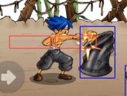

Los sensores nos permiten detectar colisiones entre un actor y otros mediante areas rectangulares.
Se pueden utilizar en muchas situaciones diferentes, podrían ser útiles para detectar si una puerta se tiene que abrir ante la cercanía de un actor, detectar si un actor está pisando el suelo o saltando, hacer que un soldado detecte a un enemigo y varias cosas más.
El primer paso para crear un sensor es tener seleccionado un actor y luego añadir el sensor al final de la lista de propiedades:
Una vez que pulsamos ese botón, vamos a poder cambiar las coordenadas del sensor y ajustarlo a nuestro gusto.
En este caso, hice que el actor tenga un sensor para detectar si se encuentra frente a algún actor:

Lo interesante de los sensores es cuando podemos interactuar con ellos desde el código, ya que desde ahí vamos a poder saber si el sensor detecta colisión con otros actores.
Tomemos como ejemplo el actor de la imagen anterior, el sensor que creamos se llama “disparo” así que para poder consultarle cosas necesitamos vincularlo a la clase del actor así:

A partir de ese momento, vamos a poder acceder a toda la información del sensor así:

Por ejemplo, si queremos hacer que el actor nos diga en todo momento si hay algún actor frente a su vista podemos escribir algo así:

y como resultado, tendríamos que observar algo así:

Es decir, cada vez que usemos el código this.disparo.cantidad_de_colisiones podremos obtener el número de actores colisionando con ese sensor.
Mediante código también se puede saber con qué actores entra en contacto un sensor. Se puede utilizar la función colisiona_con_etiqueta(etiqueta) que retorna true o false o incluso la función colisiones_con_la_etiqueta(etiqueta) que retornará una lista de todos los actores que colisionan con el sensor.
Si quieres ver un caso más completo de esto te recomendamos ver este minijuego dentro de la sección de ejemplos, en donde se usan sensores para detectar que actores se pueden golpear:
